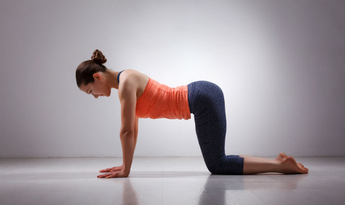

Cow Pose
Sanskrit name: Bitilasana

How to do
- Start from all fours in a tabletop position. Your knees under your hips and wrists under your shoulders or slightly forwards of them.
- Spread your fingers, root down through the base of the fingers and press your fingers on the mat.
- On an inhalation, lower the belly, lift your chest, tailbone pointing up and look up.
- Exhale, come back into your neutral ‘tabletop’ position.
Benifits of this pose
Cow pose helps relieve tension in your upper body, especially in your back, shoulders, and neck, and it gently massages the spine to increase mobility. This simple pose allows for a strong front-body stretch, from chin to pubic bone.